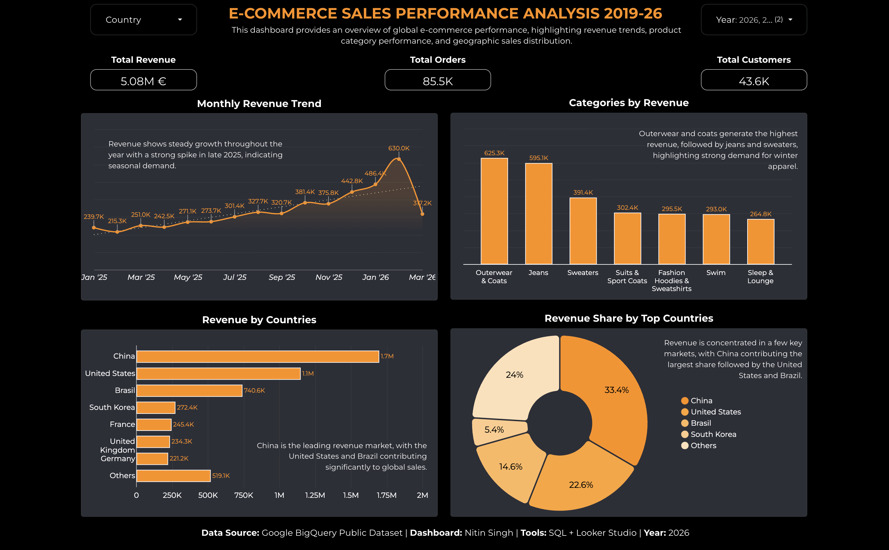

01 / CUSTOMER & COMMERCE
E-Commerce Sales Performance Analysis

SQL · BigQuery · Looker Studio · 2026
Analyzed 1M+ transactions to identify customer behavior, revenue drivers and conversion trends. Funnel analysis identified approximately 30% checkout drop-off and key conversion opportunities.
Developed KPI dashboards tracking revenue, average order value, conversion and customer performance.